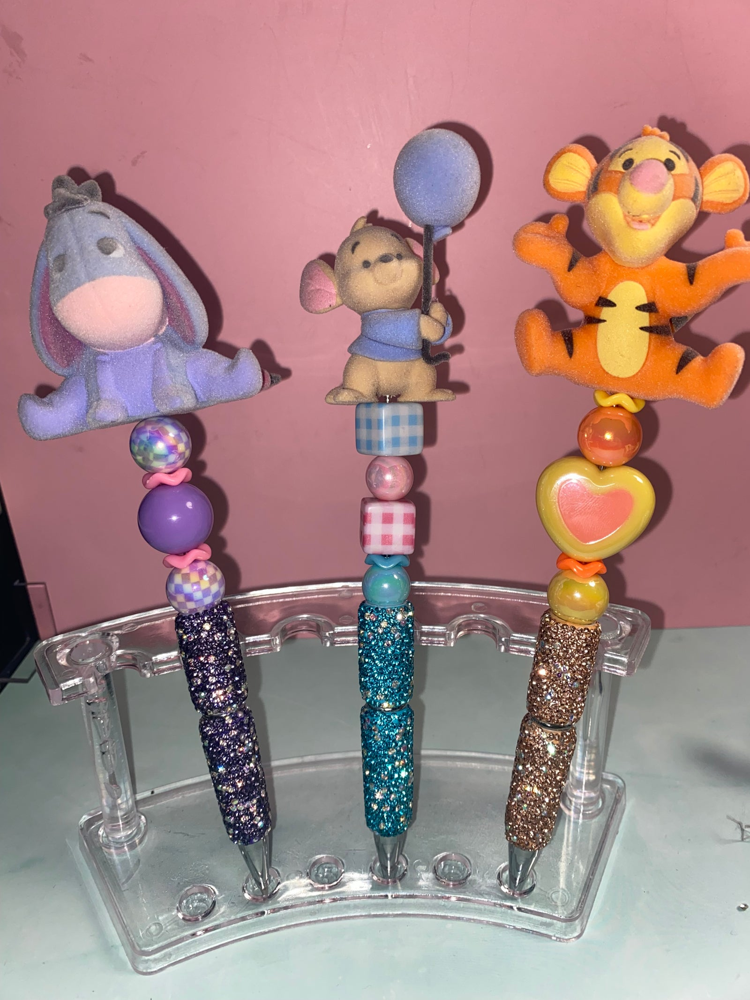

Handmade studio · @stitch.wishess
Your personal imagination architect
Hand-beaded pens, painted canvases and mischievous blue alien keepsakes. Every piece is made or hand-picked one at a time.

Made by hand
Selected pieces
The maker
“To many, Stitch is a mischievous blue alien. To me, he represents something much deeper.”
My collection is a tribute to my mom, and a way to keep precious memories alive. Every piece I find or create is a celebration of the connections that shape us, and the loved ones who stay in our hearts forever.
Abi — founder, Stitch Wishess
What goes in
Studio materialsGlass & acrylic beads
Rhinestone wraps
Embroidery floss
Acrylic paint
Epoxy resin
Vinyl decal film
Chenille & yarn
A great deal of patience